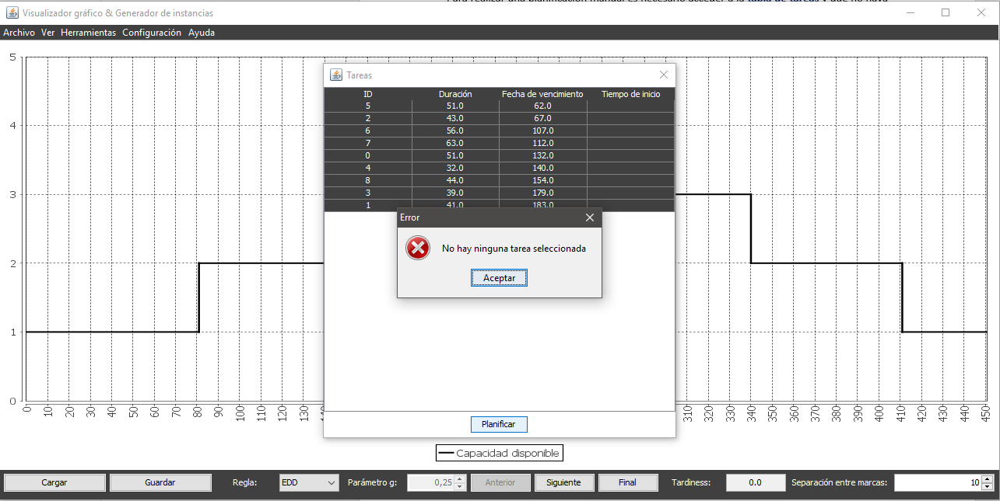
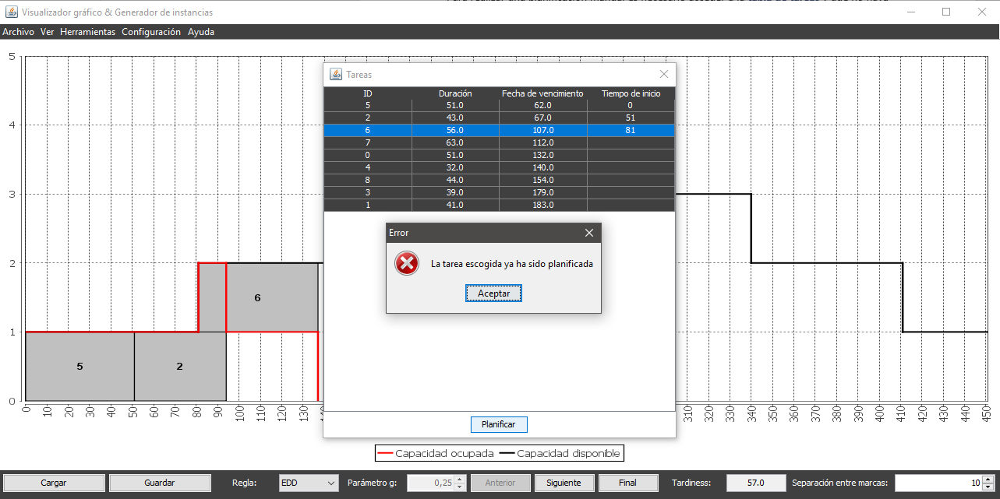

Para realizar una planificación manual es necesario acceder a la tabla de tareas y que no haya ninguna instancia planificada en ese momento en la aplicación (ni parcial ni totalmente). Si existe alguna planificación activa la opción de planificación manual estará deshabilitada.
Una vez en el diálogo correspondiente y cumpliéndose la condición anterior, para realizar esta planificación es necesario seleccionar la fila de la tarea que se desea planificar y pulsar el botón Planificar en la parte inferior de la tabla.
También puede modificarse el valor numérico especificado junto a la etiqueta Separación entre marcas para escoger con que separación inicial entre marcas de graduación se desea visualizar la instancia al planificarla.
Cada vez que se planifique una nueva tarea se actualizaró el valor del tardiness, mostrado en la parte inferior derecha de la ventana principal.
En caso de que no se seleccione ninguna fila o que la fila seleccionada contenga una tarea ya planificada se informaró al usuario del error:
 